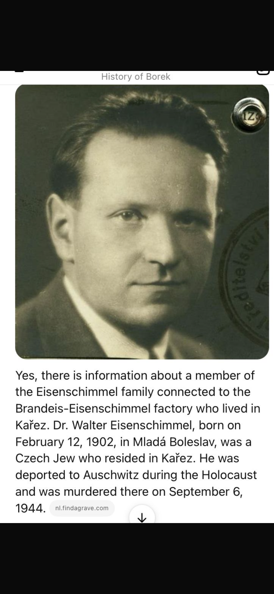

A false lead reveals a real connection
ChatGPT gave the archive the answer reproduced below. It claimed that Dr Walter Eisenschimmel had lived in Kařez and had been murdered at Auschwitz on 6 September 1944.

Checking the claim produced an important correction. The Terezín Initiative’s victim record identifies him as Valtr Eisenschimmel, born 12 February 1902, with his last address at Ruská 60 in Prague XIII. It records his deportation from Prague to Terezín on 5 July 1943 and from Terezín to Auschwitz on 16 October 1944. That transport date makes the death date stated in the screenshot impossible, and the archive has not found documentary support for the claim that he resided in Kařez.
Valtr Eisenschimmel: biographical profile · Terezín Initiative victim record · Mladá Boleslav family history · Roudnice factory record · Industrial Topography: Borek works · Return to the connected timeline